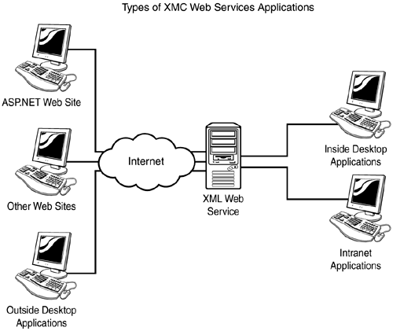

In this chapter you will
Overview of the XML Web Services infrastructure
Get started with XML Web Services
Create a simple XML Web Service using parameters
Consume XML Web Services
Pass a dataset back from an XML Web Service
Methods and other program logic available to applications both on the Web or the desktop are callled XML Web Servers or simply Web Servers.
To use the service, or communicate, the consumer will use XML Messaging and HTTP. The same is true when the Web Service is communicating back to the consumer.
One of the great things about using XML Web Services is that as long as the consumer can create and consume messages defined for the Web Service, it doesn't matter what the consumer is written in, or even what the platform is. The term used for this is loosely coupled, or in other words, nonproprietary (see Figure 13.1.)

You also can use XML Web Services either internally or externally to an organization, as long as you can get to the network or Internet.